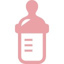
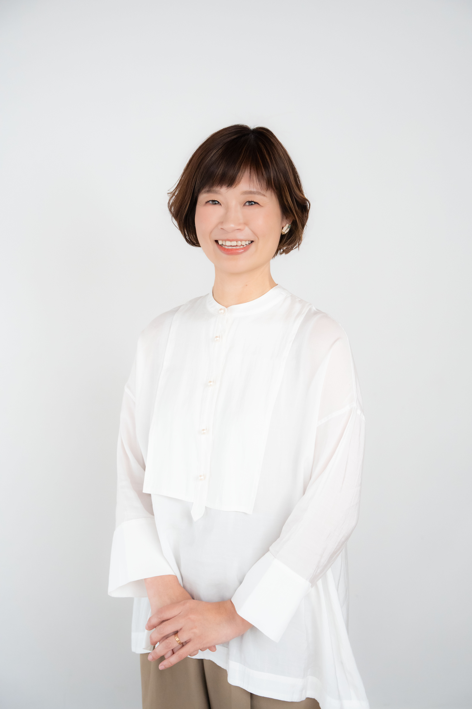
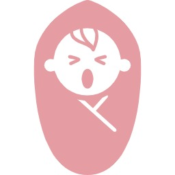
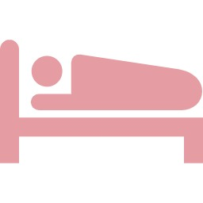
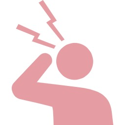
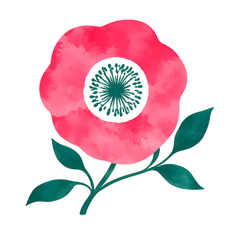

授乳や母乳のことが不安
母乳が足りているか心配。
うまく飲めているか不安。
川崎市産後ケア事業 委託助産院
武蔵小杉・元住吉・川崎市の訪問型産後ケア・
助産師ベビーシッター
心をほどいて
前を向ける日のために
助産師・保健師・看護師
延べ1,200組以上の
訪問実績
3児の母でもある
助産師が
ご自宅へ伺います


母乳が足りているか心配。
うまく飲めているか不安。

なかなか寝てくれない。
夜泣きがつらい。

ゆっくり休める時間がほしい。
心も体も休めたい。
何が正しいのかわからず、
情報に振り回されてしまう。

体の回復が進まない。
気持ちが落ち込みやすい。
もっと身近に相談できる場所や
サポートがほしい。
赤ちゃんだけでなく、
お母さんの気持ちにも寄り添いながら、
ご家庭に合ったケアを一緒に考えます。
母乳かミルクか、抱っこの仕方や寝かしつけ。
育児に正解はひとつではありません。
ご家族のペースに合わせて、
無理のない方法を一緒に考えます。
産後ケアで関わった助産師が、
そのままベビーシッターも担当できます。
赤ちゃんのことを知っている人に
預けられる安心感があります。
離乳食、夜泣き、仕事復帰など、
月齢が上がるたびに悩みは変わります。
「また相談したい」と思ったとき、
続けて頼れる存在でいられることを、
大切にしています。
「これでいいのかな」「なんとなくつらい」
そんな気持ちも話せる場所です。
お母さんが少し楽になることが、
赤ちゃんへの一番のケアだと考えています。
どのサービスが合うか迷ったら･･･

| 月 | 火 | 水 | 木 | 金 | 土 | 日・祝 | |
|---|---|---|---|---|---|---|---|
| 9:00-12:00 | ○ | − | ○ | − | ○ | − | − |
| 13:00-16:00 | ○ | − | ○ | ○ | ○ | − | − |
※ 産後ケアの訪問時間は上記時間内で
調整いたします。
※ ベビーシッターは要相談で時間外対応も可能です。
Message
てまりの助産院へのご相談・ご予約は、
公式LINEより承っております。
授乳や母乳のこと、
赤ちゃんの体重や発育のこと、
産後の体調や育児の不安など、
どんな小さなお悩みでも大丈夫です。